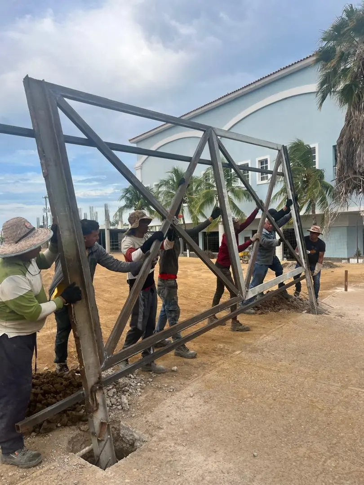
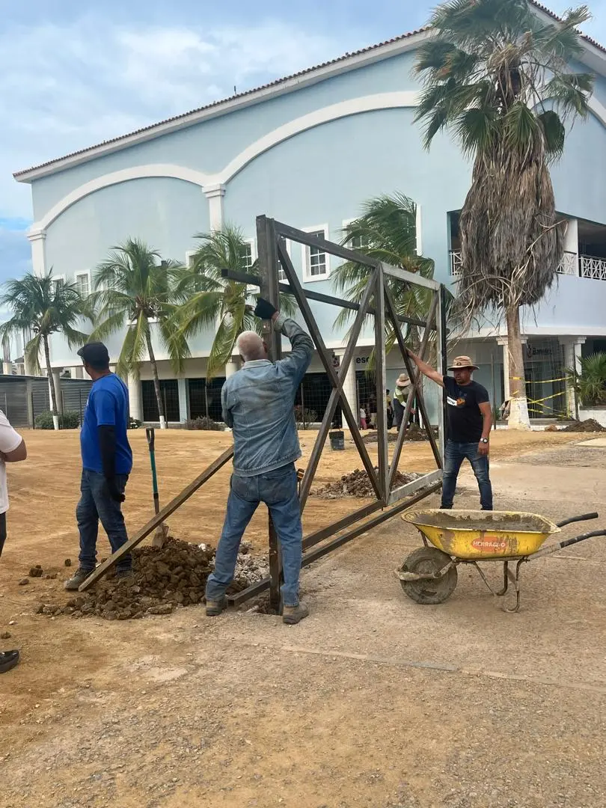
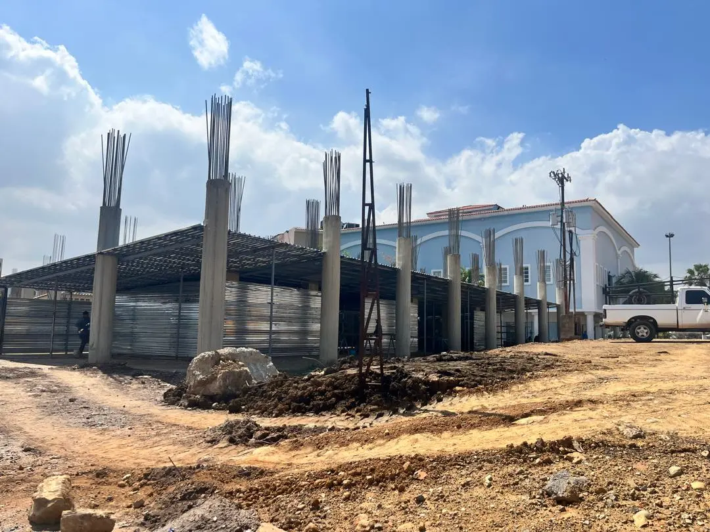
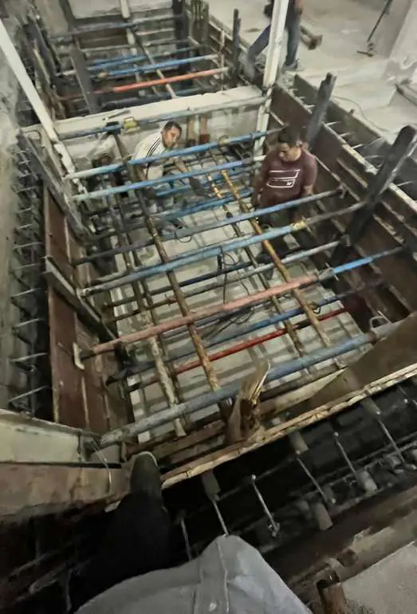
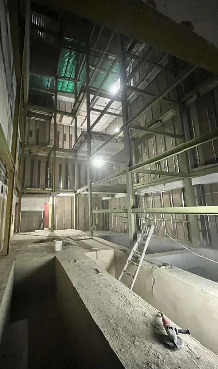
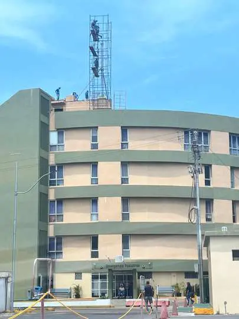
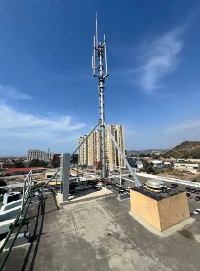
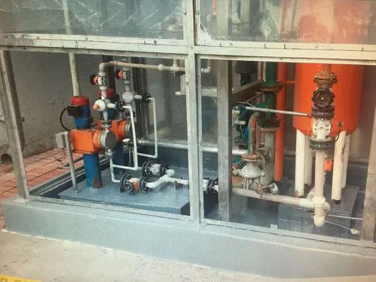
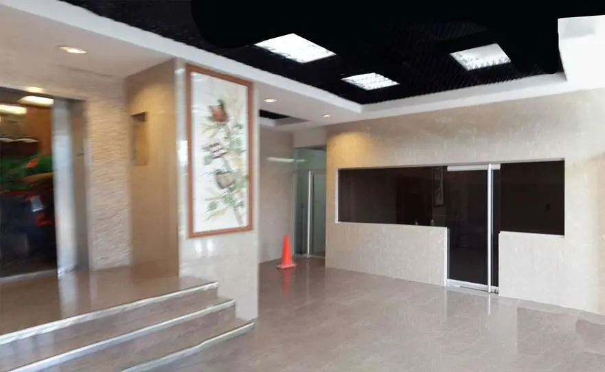
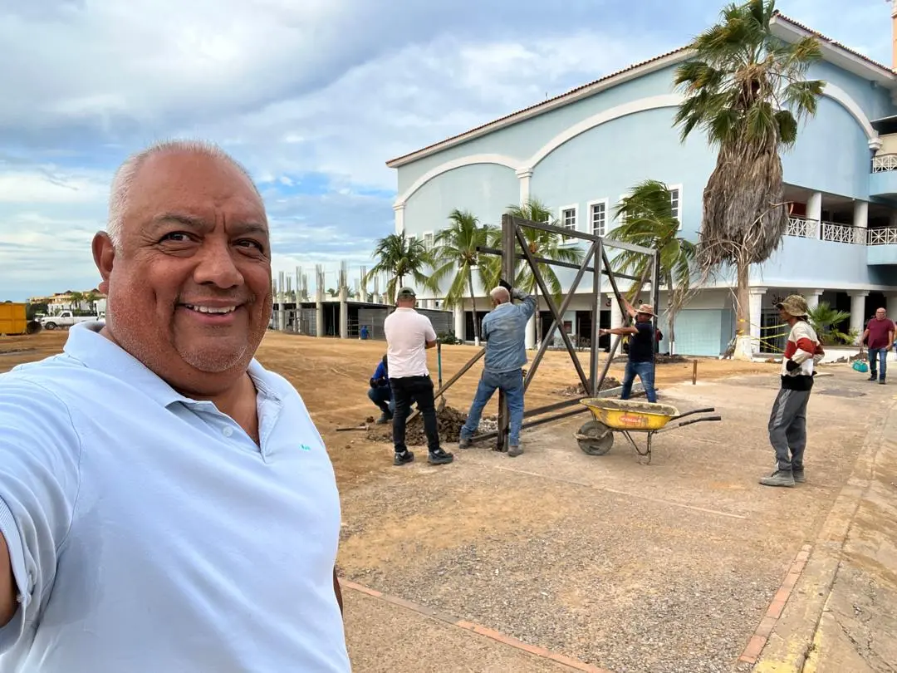

Depósito para Tijerazo
Columnas de concreto armado vaciadas en sitio y estructura metálica izada, aplomada y anclada por nuestro personal.
Lám. 01 · 0701 Ingeniería C.A.
Diseñamos, construimos y mantenemos estructuras de concreto armado y acero en el oriente de Venezuela desde 2006: el Centro Comercial Plaza Mayor, la planta de Cervecería Polar en Barcelona, las tiendas Tijerazo y torres de telefonía para Digitel.

Lám. 02 · Obras


Columnas de concreto armado vaciadas en sitio y estructura metálica izada, aplomada y anclada por nuestro personal.


Para Inversiones Felikai, Inversiones Togo y Grupo Holly.


Para Corporación Digitel C.A.
Plaza Mayor, Lechería
La última cota es el edificio de estructura metálica de Rio Automercado, en la parcela 1. Las tres a la misma escala.
750 ml de muelle
13.800 V de interconexión a Corpoelec


Para Cervecería Polar C.A.
Lám. 03 · Servicios
Ingeniería conceptual y de detalle civil, mecánica y eléctrica, modelado BIM, estudios de factibilidad e interventoría técnica, administrativa y financiera de obras públicas y privadas.
Plantas industriales, edificaciones y locales comerciales: fundaciones, estructuras de concreto armado y acero, montajes mecánicos, instalaciones eléctricas, sanitarias, de voz y datos.
Diagnóstico, planes preventivos y correctivos, recubrimientos industriales, asfaltado, reemplazo de tuberías e instalación de equipos y maquinaria.
Torres y mástiles de telefonía celular con su fundación, estructura metálica, potencia, puesta a tierra y pararrayos.
Compra y suministro de materiales, repuestos y revestimientos para plantas industriales y edificaciones.
Topografía, replanteo, detección de servicios enterrados, escáner láser, aerofotogrametría y LIDAR, estudios de suelo y micropilotaje, junto a nuestros aliados.
Lám. 04 · Cuadro de obras
| Año | Cliente | Descripción | Lugar |
|---|---|---|---|
| 2025 | Corporación Digitel C.A. | Gerencia y construcción de torres y mástiles de telecomunicaciones, con fundaciones, estructura de concreto armado y metálica, potencia, puesta a tierra y pararrayos. | Estado Anzoátegui |
| 2006–2025 | Centro Comercial Plaza Mayor | Gerencia, consultoría, construcción y mantenimiento eléctrico, civil y mecánico. Edificio de estructura metálica de Rio Automercado, 10.500 m². | Lechería |
| 2024 | Inversiones Togo C.A. | Ingeniería, diseño y construcción de infraestructura para 6 escaleras mecánicas, tienda Tijerazo. | Puerto La Cruz |
| 2024 | Grupo Holly C.A. | Gerencia de mantenimiento de techos y estructura, tienda Tijerazo. | Puerto La Cruz |
| 2023 | Inversiones Felikai | Ingeniería, diseño y construcción de infraestructura para ascensores de 5 niveles, tienda Tijerazo. | Puerto La Cruz |
| 2016 | Conorca C.A. | Gerencia de adecuación de local para restaurante, Centro Comercial Plaza Mayor, 95 m². | Lechería |
| 2008–2015 | Grupo Zantronic | Gerencia de ingeniería y construcción del Edificio Zantronic: 1.700 m², 6 niveles, estructura de acero. | Lechería |
| 2014 | Cervecería Polar C.A. | Adecuación de piscinas de contención de H2SO4 en el área de tanques al 98 %, Elaboración y Cocimiento. | Planta Barcelona |
| 2014 | Cervecería Polar C.A. | Restauración del revestimiento antiácido de las piscinas de H2SO4, PTAB. | Planta Barcelona |
| 2014 | Cervecería Polar C.A. | Reparación de canales de acero inoxidable, área de Elaboración. | Planta Barcelona |
| 2014 | Cervecería Polar C.A. | Sustitución de pisos y brocales por granito blanco, área de Cocimiento. | Planta Barcelona |
| 2014 | Cervecería Polar C.A. | Remodelación de obras civiles y proyecto de arquitectura del lobby de gerencias de Elaboración y Calidad. | Planta Barcelona |
| 2014 | Cervecería Polar C.A. | Altimetría y planimetría para la sustitución de pisos de Cocimiento. | Planta Barcelona |
| 2014 | Cervecería Polar C.A. | Levantamiento topográfico para la ubicación del turbogenerador. | Planta Barcelona |
| 2014 | Cervecería Polar C.A. | Aplicación de friso en paredes internas de silos, área de conos, espacio confinado. | Planta Barcelona |
| 2014 | Pepsi-Cola Venezuela C.A. | Levantamiento topográfico, verificación y replanteo del proyecto de recuperación del área de CO2. | Planta Barcelona |
| 2014 | Marina Kalina | Gerencia de ingeniería y construcción: 12.000 m², muelle para embarcaciones de hasta 56 pies, travel lift y colmenas para 80 lanchas de 27 pies. | Anzoátegui |
| 2011–2012 | Banco de Venezuela | Gerencia de inspección de construcción del Hotel Eurobuilding: estructura de concreto armado y fundaciones. | Lechería |
Lám. 05 · Empresa

0701 Ingeniería C.A. se fundó en Lechería en agosto de 2006 para hacer ingeniería, construcción y mantenimiento de instalaciones industriales y edificaciones del oriente del país, en petróleo, gas, minería, comercio y construcción civil.
La dirige el Ing. Gabriel A. Forero León, representante legal: ingeniero civil estructural con más de 35 años de experiencia, postgrado en Ingeniería de Mantenimiento y BIM Manager. Con su equipo, acompaña al cliente desde el diagnóstico inicial hasta la implementación.
Lám. 06 · Contacto